不换路由只提优先级？北京电信家庭宽带国际加速服务（163Plus）晚高峰双线对照实测
晚高峰访问海外节点，开通北京电信“家庭宽带国际加速服务”（俗称 163Plus）能带来多大改善？本次实测在北京时间 21–23 点对比两条配置相同的家宽，涵盖六组空载 MTR 路由追踪与四组采用 BBR 的单连接 iperf3 反向下载测试。实测显示，163Plus 在四条测试路径上的单连接平均下载速率均显著提升，六组 MTR 末跳丢包率均降至 0%–0.6%；但代价与局限也同样清晰：末跳排队抖动（StDev）明显放大，且受制于海外接入段质量，部分路径仍会出现短时断流或高频重传。
一、业务内容与开通后的变化
北京电信“家庭宽带国际加速服务”（方案编号：25BJ100098）的官方资费与规则如下：
- 资费：30 元/月，首月按天折算，限 200M 及以上 FTTH 家庭宽带办理。
- 办理与退订：可通过 10000 号或线下渠道办理，订购后立即生效；可通过营业厅或 10000 号退订，次月生效。
- 有效期：24 个月。到期前 30 日双方均未提出异议，每次自动续展 24 个月；无在网要求，无违约责任。
图 1：北京电信“家庭宽带国际加速服务”官方资费说明（方案编号：25BJ100098）
除资费单列出的条款外，实测开通该业务后还有三项直接影响使用方式的变更（已向电信官方确认）：IPv4 变为 CGNAT 内网地址、IPv6 被收回，且该业务与公网 IP 包互斥。 下文分别用“普通家宽”和“163Plus 家宽”指代两条测试线路。
二、业务原理：同路由体系下的 C–I 段保障
此业务开通后仍走普通 163（AS4134）路由体系，核心变化在于 C–I 段的转发保障。C 是国内核心层，I 是国际出口层。海外服务器向北京家宽发送数据时，流量沿 I → C 方向通过这一段。
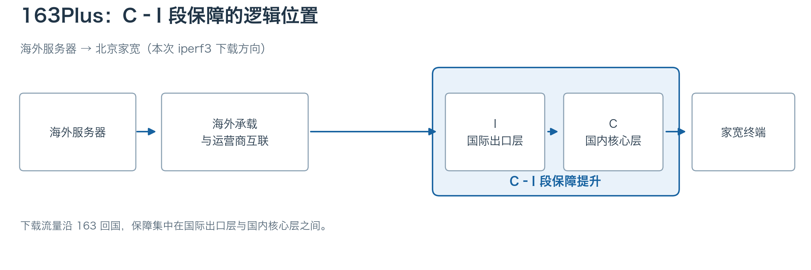
图 2：海外下载方向上的 C–I 段
C–I 段拥塞是普通 163 家宽晚高峰访问海外的主要瓶颈之一。163Plus 的核心机制是在不改变原有 AS4134 骨干路由的前提下，通过 QoS 提高用户流量在 C–I 段拥塞时的转发优先级与队列待遇。不过，海外流量进入国内前还需经过国际接入层（F）与国际交换层（X/S）。如果瓶颈出在海外上游互联端口（Peering/Transit）或海外 PoP 接入段（X–F），仅靠提升国内 C–I 段的转发优先级并不能拓宽海外侧的可用带宽，也不能改变跨境绕行路径。
三、测试方法与路径
两条宽带在北京时间 21–23 点晚高峰同时对比，有线设备和客户端配置相同。MTR 在空载时单独运行，保留逐跳记录并汇总末跳统计；ICMP 响应丢包率不等于 TCP 转发丢包率。iperf3 采用 BBR，单 TCP 流反向下载 15 秒，速率和 Retr 均取服务端 sender 日志。
iperf3 -t 15 -R -c <测试服务器>
| 本文标签 |
实际测试起点与路径 |
iperf3 |
| LAX 163 · AWS PDX |
AWS PDX → LAX 接入 163 |
有 |
| FRA 163 · AWS FRA |
AWS FRA → FRA 接入 163 |
有 |
| LAX Arelion |
LAX 节点 → Arelion → 163 |
有 |
| FRA TATA |
FRA 节点 → TATA → 163 |
有 |
| FRA 163 · AWS LHR |
AWS LHR → FRA 接入 163 |
未测 |
| FRA Cogent · AWS SIN |
AWS SIN → Cogent（经 FRA）→ 163 |
未测 |
表中按流量进入 163 骨干网前的接入点与上游运营商命名标签，例如 AWS 新加坡样本经 Cogent 绕行法兰克福接入 163，故标记为 FRA Cogent · AWS SIN。
四、MTR：六组回程路由与逐跳表现
以下六组回程 MTR 截图中，左侧均为 163Plus 家宽，右侧为普通家宽。各组两条线路使用相同的海外上游和电信国际接入方向，部分具体接口存在分流。国内骨干与北京城域网（AS4847）中出现的不同接口 IP，可由 ECMP 等多路径转发机制解释。163Plus 在六组记录中均比普通家宽少 1–3 跳到达目标。开通后的 CGNAT 改变了末端接入形态，但具体跳数差异仍需结合局端拓扑判断。
LAX 163 · AWS PDX
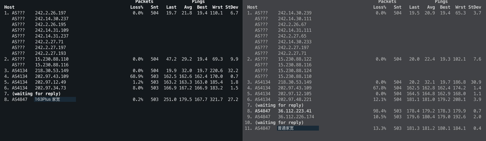
两条线路在洛杉矶同经 218.30.53.149 与 202.97.43.109 入网。第 4 跳近 68% 的响应丢包未延续至后续节点，符合骨干路由器控制面 ICMP 限速的特征。真正拉开差距的是末跳：普通家宽丢包率达 13.3%，163Plus 仅为 0.2%。
FRA 163 · AWS FRA
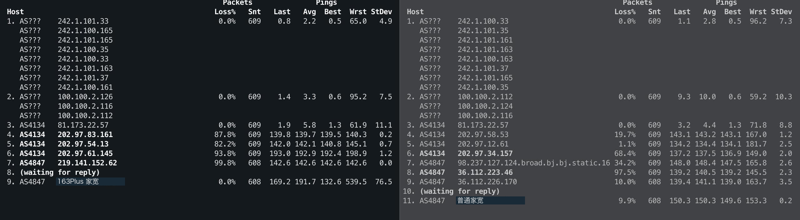
两侧在第 3 跳同经电信法兰克福节点 81.173.22.57（AS4134）入网，第 4 跳起分流，并于第 7 跳进入北京 AS4847。163Plus 第 7 跳的 99.8% 响应丢包同样未延续至末跳，符合控制面限速的特征。末跳丢包率为 0.0%，普通家宽为 9.9%。
LAX Arelion
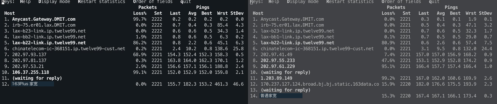
两侧从 DMIT 网关出发后均经 Arelion（twelve99.net）在洛杉矶 lax-b22 汇合，并通过同一互联接口（chinatelecom-ic-368151）交接至电信 163。两侧各进行约 2,220 次探测，普通家宽末跳丢包率为 15.3%，163Plus 为 0.0%。
FRA TATA
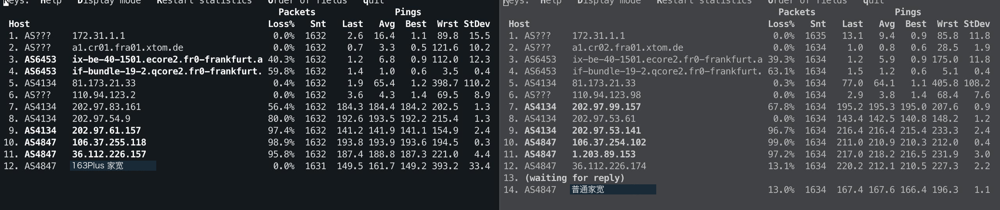
两侧由 xTom 法兰克福出发，经相同的两跳 TATA（AS6453）核心节点后，在第 5 跳统一交接至电信 81.173.21.33。普通家宽末跳丢包率为 13.0%，163Plus 降至 0.0%。
FRA 163 · AWS LHR
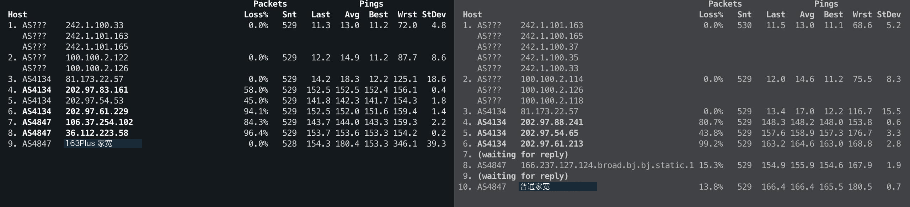
伦敦样本在第 3 跳同样汇聚至法兰克福 81.173.22.57 接入 163，与 AWS FRA 样本重合。其中 163Plus 侧在第 3、4 跳与法兰克福样本走向一致。末跳丢包率由普通家宽的 13.8% 降至 0.0%。
FRA Cogent · AWS SIN
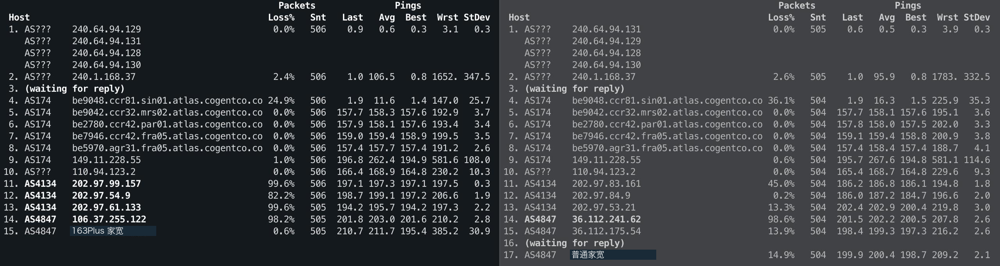
起点为 AWS 新加坡，两侧第 4–10 跳完全重合：沿 Cogent（AS174）经马赛（mrs02）、巴黎（par01）绕行至法兰克福（fra05），在第 10 跳经 110.94.123.2 接入电信。由于共用同一套 163 路由体系，163Plus 虽然将晚高峰末跳丢包从 14.9% 压低至 0.6%，但无法改变新加坡绕行欧洲的物理路径，平均 RTT 依然高达 211.7 ms（普通家宽为 200.4 ms）。
六组末跳对照
| 路径 |
线路 |
Loss% |
Snt |
Avg / ms |
StDev / ms |
| LAX 163 · AWS PDX |
163Plus 家宽 |
0.2% |
503 |
179.5 |
27.2 |
| LAX 163 · AWS PDX |
普通家宽 |
13.3% |
503 |
181.2 |
0.4 |
| FRA 163 · AWS FRA |
163Plus 家宽 |
0.0% |
608 |
191.7 |
76.5 |
| FRA 163 · AWS FRA |
普通家宽 |
9.9% |
608 |
150.3 |
0.2 |
| LAX Arelion |
163Plus 家宽 |
0.0% |
2221 |
182.3 |
46.6 |
| LAX Arelion |
普通家宽 |
15.3% |
2220 |
167.1 |
0.3 |
| FRA TATA |
163Plus 家宽 |
0.0% |
1631 |
161.7 |
33.4 |
| FRA TATA |
普通家宽 |
13.0% |
1634 |
167.6 |
1.1 |
| FRA 163 · AWS LHR |
163Plus 家宽 |
0.0% |
528 |
180.4 |
39.3 |
| FRA 163 · AWS LHR |
普通家宽 |
13.8% |
529 |
166.4 |
0.7 |
| FRA Cogent · AWS SIN |
163Plus 家宽 |
0.6% |
505 |
211.7 |
30.9 |
| FRA Cogent · AWS SIN |
普通家宽 |
14.9% |
504 |
200.4 |
2.1 |
汇总六组末跳数据，两类流量呈现出鲜明的“高丢包、低抖动”与“低丢包、高抖动”反差：普通家宽末跳丢包率高达 9.9%–15.3%，但成功返回样本的 StDev 仅为 0.2–2.1 ms。163Plus 有四组末跳丢包清零（另两组仅 0.2% 和 0.6%），但六组 StDev 全部升至 27.2–76.5 ms。例如 AWS FRA 的单次探测最高 RTT 达 539.5 ms，拉高了整体均值与离散度。
这种“高丢包、低抖动”与“低丢包、高抖动”的反差，符合两类流量在晚高峰拥塞点受到不同队列处理的特征。普通家宽若触发硬限速（Policing）或尾部丢包（Tail Drop），超限或遇到队满的探测包会被直接丢弃，不计入 RTT 统计。成功返回的探测包若未经历深队列等待，StDev 就会很低。163Plus 若获得更高的调度优先级或更深的队列缓冲（Buffer），原本会被丢弃的包便有机会等到转发。这能减少末跳丢包，也会让排队较久的响应进入 RTT 统计。各次探测的排队时延（Queuing Delay）相差越大，StDev 就越高。
五、iperf3：四条路径的单连接下载
| 路径 |
普通 / Mbps |
163Plus / Mbps |
普通 Retr |
163Plus Retr |
| LAX 163 · AWS PDX |
0.138 |
114 |
36 |
0 |
| FRA 163 · AWS FRA |
0.415 |
78.6 |
50 |
1,815 |
| LAX Arelion |
0.205 |
138 |
49 |
417 |
| FRA TATA |
61.5 |
233 |
10,228 |
41,909 |
LAX 163 · AWS PDX
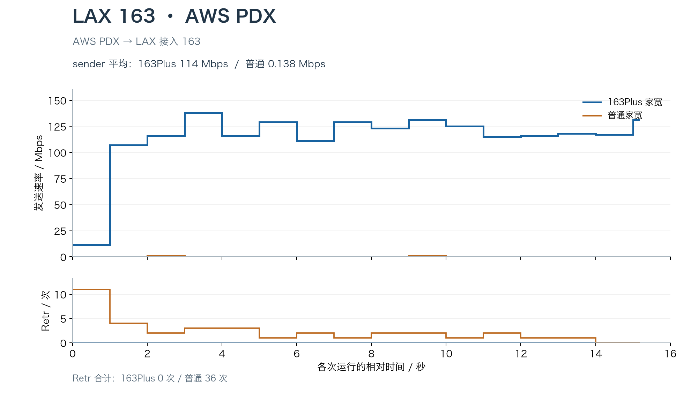
【163Plus 家宽】
[ 5] local 172.26.12.11 port 5201 connected to 【163Plus 家宽】 port 1523
[ 5] 0.00-1.00 sec 1.38 MBytes 11.5 Mbits/sec 0 450 KBytes
[ 5] 1.00-2.00 sec 12.8 MBytes 107 Mbits/sec 0 6.50 MBytes
[ 5] 2.00-3.00 sec 13.9 MBytes 116 Mbits/sec 0 6.50 MBytes
[ ID] Interval Transfer Bitrate Retr
[ 5] 0.00-15.18 sec 206 MBytes 114 Mbits/sec 0 sender
【普通家宽】
[ 5] local 172.26.12.11 port 5201 connected to 【普通家宽】 port 33360
[ 5] 0.00-1.00 sec 0.00 Bytes 0.00 bits/sec 11 9.84 KBytes
[ 5] 1.00-2.00 sec 0.00 Bytes 0.00 bits/sec 4 5.62 KBytes
[ 5] 2.00-3.00 sec 128 KBytes 1.05 Mbits/sec 2 4.22 KBytes
[ ID] Interval Transfer Bitrate Retr
[ 5] 0.00-15.18 sec 256 KBytes 138 Kbits/sec 36 sender
普通家宽约 15 秒仅发送 256 KiB，分布在两个完整的一秒区间，每个区间 128 KiB。163Plus 在第一秒后维持 107–138 Mbps，全程零重传。两条线路平均速率分别为 0.138 Mbps 和 114 Mbps。从日志末列的拥塞窗口（Cwnd）看，163Plus 从第 2 秒起稳定在 6.50 MiB，普通家宽则反复重传，Cwnd 始终只有 1.41–9.84 KiB。
FRA 163 · AWS FRA
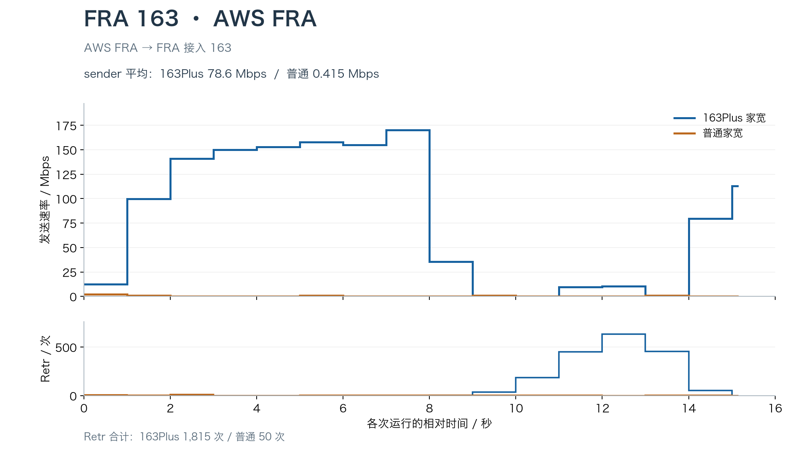
【163Plus 家宽】
[ 5] local 172.26.14.138 port 5201 connected to 【163Plus 家宽】 port 1474
[ 5] 7.00-8.00 sec 20.2 MBytes 170 Mbits/sec 0 3.18 MBytes
[ 5] 8.00-9.00 sec 4.25 MBytes 35.7 Mbits/sec 2 1.41 KBytes
[ 5] 9.00-10.00 sec 0.00 Bytes 0.00 bits/sec 37 18.3 KBytes
[ 5] 10.00-11.00 sec 0.00 Bytes 0.00 bits/sec 184 56.2 KBytes
[ 5] 11.00-12.00 sec 1.12 MBytes 9.44 Mbits/sec 450 132 KBytes
[ 5] 12.00-13.00 sec 1.25 MBytes 10.5 Mbits/sec 634 107 KBytes
[ 5] 13.00-14.00 sec 0.00 Bytes 0.00 bits/sec 453 105 KBytes
[ 5] 14.00-15.00 sec 9.50 MBytes 79.7 Mbits/sec 55 2.42 MBytes
[ ID] Interval Transfer Bitrate Retr
[ 5] 0.00-15.15 sec 142 MBytes 78.6 Mbits/sec 1815 sender
【普通家宽】
[ 5] local 172.26.14.138 port 5201 connected to 【普通家宽】 port 50696
[ 5] 7.00-8.00 sec 0.00 Bytes 0.00 bits/sec 2 4.22 KBytes
[ 5] 8.00-9.00 sec 0.00 Bytes 0.00 bits/sec 2 4.22 KBytes
[ 5] 9.00-10.00 sec 128 KBytes 1.05 Mbits/sec 2 2.81 KBytes
[ 5] 10.00-11.00 sec 0.00 Bytes 0.00 bits/sec 3 7.03 KBytes
[ ID] Interval Transfer Bitrate Retr
[ 5] 0.00-15.15 sec 768 KBytes 415 Kbits/sec 50 sender
163Plus 全程均值 78.6 Mbps（普通家宽仅 0.415 Mbps），但中途出现明显断流：第 2–8 秒速率维持在 141–170 Mbps，第 8–9 秒期间，Cwnd 从 3.18 MiB 骤降至 1.41 KiB（约 1 个 MSS），随后连续两秒发送量归零。窗口收缩到这一水平后，可维持的在途数据量极低，11–14 秒间仍伴随上千次重传缓慢恢复窗口。
LAX Arelion
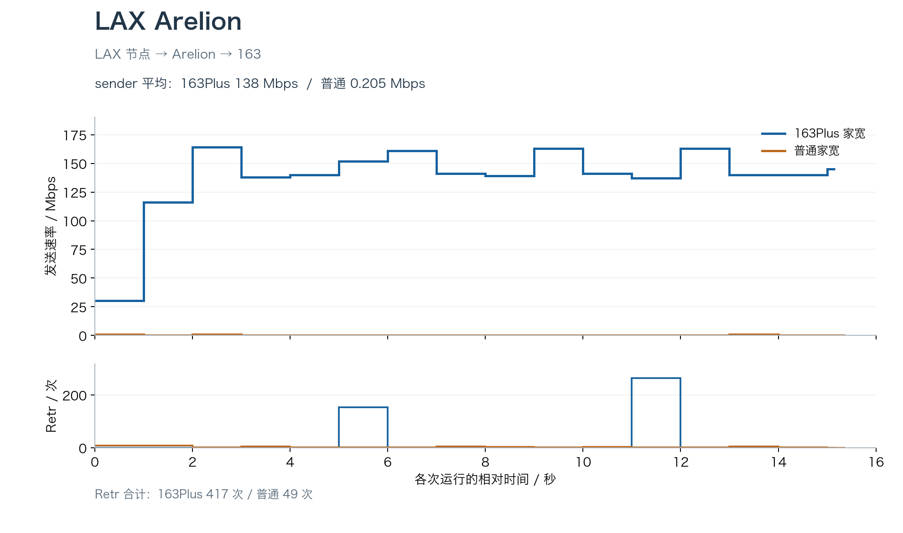
【163Plus 家宽】
[ 5] local 174.136.204.72 port 5201 connected to 【163Plus 家宽】 port 1521
[ 5] 4.00-5.00 sec 16.8 MBytes 140 Mbits/sec 0 7.95 MBytes
[ 5] 5.00-6.00 sec 18.1 MBytes 152 Mbits/sec 153 5.59 MBytes
[ 5] 6.00-7.00 sec 19.2 MBytes 161 Mbits/sec 0 5.59 MBytes
…
[ 5] 10.00-11.00 sec 16.8 MBytes 141 Mbits/sec 0 5.59 MBytes
[ 5] 11.00-12.00 sec 16.4 MBytes 137 Mbits/sec 264 3.91 MBytes
[ 5] 12.00-13.00 sec 19.4 MBytes 163 Mbits/sec 0 3.91 MBytes
[ ID] Interval Transfer Bitrate Retr
[ 5] 0.00-15.16 sec 249 MBytes 138 Mbits/sec 417 sender
【普通家宽】
[ 5] local 174.136.204.72 port 5201 connected to 【普通家宽】 port 44202
[ 5] 4.00-5.00 sec 0.00 Bytes 0.00 bits/sec 1 5.62 KBytes
[ 5] 5.00-6.00 sec 0.00 Bytes 0.00 bits/sec 2 2.81 KBytes
[ 5] 6.00-7.00 sec 0.00 Bytes 0.00 bits/sec 2 5.62 KBytes
…
[ 5] 10.00-11.00 sec 0.00 Bytes 0.00 bits/sec 3 2.81 KBytes
[ 5] 11.00-12.00 sec 0.00 Bytes 0.00 bits/sec 2 5.62 KBytes
[ 5] 12.00-13.00 sec 0.00 Bytes 0.00 bits/sec 2 1.41 KBytes
[ ID] Interval Transfer Bitrate Retr
[ 5] 0.00-15.37 sec 384 KBytes 205 Kbits/sec 49 sender
163Plus 全程平均 138 Mbps（普通家宽 0.205 Mbps）。与 AWS FRA 不同的是，尽管 163Plus 在第 5–6 秒和 11–12 秒分别出现 153 次和 264 次重传，但 BBR 的 Cwnd 仅从 7.95 MiB 先后回调至 5.59 MiB 和 3.91 MiB。按该路径约 180 ms RTT 估算，维持 100 Mbps 吞吐所需的带宽时延积（BDP）约为 2.15 MiB，窗口仍高于这一水平。两个重传区间的速率分别为 152 和 137 Mbps，未出现发送停顿。
FRA TATA
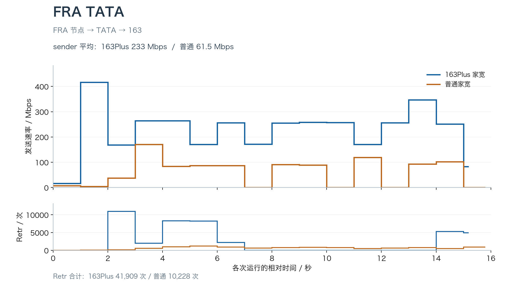
【163Plus 家宽】
[ 5] local 45.147.50.23 port 5201 connected to 【163Plus 家宽】 port 2304
[ 5] 0.00-1.00 sec 2.00 MBytes 16.8 Mbits/sec 0 403 KBytes
[ 5] 1.00-2.00 sec 49.6 MBytes 416 Mbits/sec 0 22.1 MBytes
[ 5] 2.00-3.00 sec 20.1 MBytes 169 Mbits/sec 10973 11.6 MBytes
[ 5] 3.00-4.00 sec 31.5 MBytes 264 Mbits/sec 2023 1.87 MBytes
[ 5] 4.00-5.00 sec 31.5 MBytes 264 Mbits/sec 8305 19.1 MBytes
[ 5] 5.00-6.00 sec 20.4 MBytes 171 Mbits/sec 8253 7.29 MBytes
[ ID] Interval Transfer Bitrate Retr
[ 5] 0.00-15.19 sec 422 MBytes 233 Mbits/sec 41909 sender
【普通家宽】
[ 5] local 45.147.50.23 port 5201 connected to 【普通家宽】 port 58864
[ 5] 0.00-1.00 sec 896 KBytes 7.33 Mbits/sec 8 78.8 KBytes
[ 5] 1.00-2.00 sec 512 KBytes 4.20 Mbits/sec 28 305 KBytes
[ 5] 2.00-3.00 sec 4.50 MBytes 37.7 Mbits/sec 121 1.45 MBytes
[ 5] 3.00-4.00 sec 20.4 MBytes 171 Mbits/sec 559 7.42 MBytes
[ 5] 4.00-5.00 sec 10.0 MBytes 83.9 Mbits/sec 1000 8.25 MBytes
[ 5] 5.00-6.00 sec 10.4 MBytes 87.1 Mbits/sec 1200 8.21 MBytes
[ ID] Interval Transfer Bitrate Retr
[ 5] 0.00-15.80 sec 116 MBytes 61.5 Mbits/sec 10228 sender
普通家宽发送 116 MiB，平均 61.5 Mbps，重传 10,228 次；163Plus 发送 422 MiB，平均 233 Mbps，重传 41,909 次。163Plus 的吞吐为普通家宽的 3.8 倍，发送量为 3.64 倍，重传数为 4.10 倍。
按发送量折算，普通家宽约 88 次重传/MiB，163Plus 约 99 次/MiB，后者高约 13%，单位数据量的重传负担处于同一量级。两条线路均经 TATA 接入，海外互联侧是可能的共同瓶颈。在相近的重传负担下，具备国内 C–I 段保障的 163Plus 仍达到普通家宽 3.8 倍的单流吞吐。
六、总结
晚高峰四组测试中，LAX 163、LAX Arelion 和 FRA 163（AWS FRA）的普通家宽均不足 0.5 Mbps，163Plus 分别达到 114、138 和 78.6 Mbps；FRA TATA 则由 61.5 Mbps 提升至 233 Mbps。
综合来看，北京电信 163Plus 有效缓解了普通 163 家宽晚高峰在 C–I 段的拥塞丢包，让海外单连接 TCP 流量得以顺利撑开窗口起速。但它的作用范围仅限于国内出口段的转发调度：一方面，若海外互联侧或 PoP 节点本身容量不足，传输瓶颈与重传依然存在；另一方面，它不会改变原有的 163 路由走向（如新加坡经 Cogent 绕行法兰克福的路径开通后依然绕行），对时延敏感的场景仍取决于目标节点具体的海外接入路由。
如果你常用欧美的低价服务器，希望晚高峰从这些机器下载时快一些，又用不到 IPv6 和公网 IPv4，我觉得每月花 30 元开通 163Plus 还算划算。此外据我了解，上海电信面向家宽的 CN2 和 163Plus 都已停止新办，北京这项业务如果正好用得上，我建议趁还能办时及时上车开通。
参考资料与原始数据
Luminous，《〖杂谈〗运营商链路简评&鉴别（163/169/CN2等)》，2020-08-25。
原始数据附件：